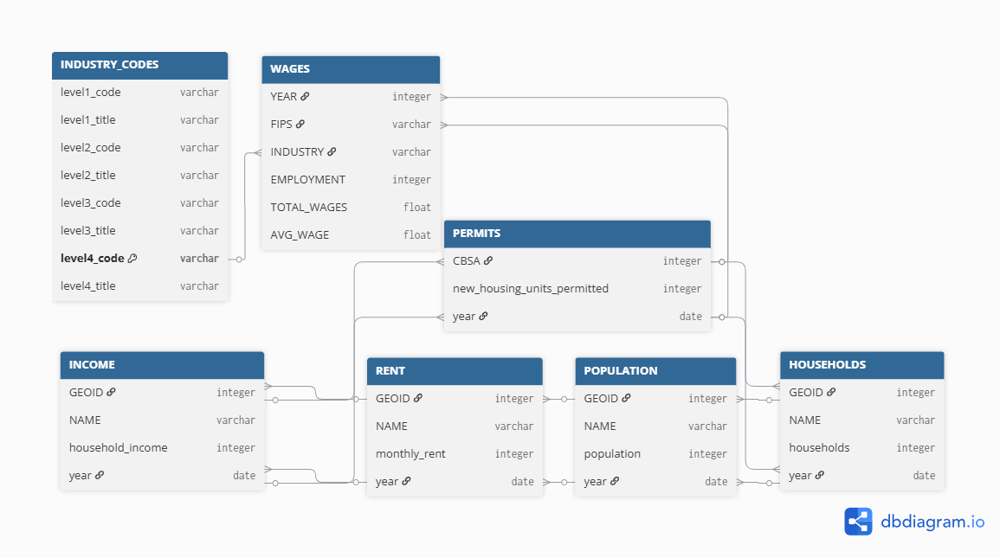
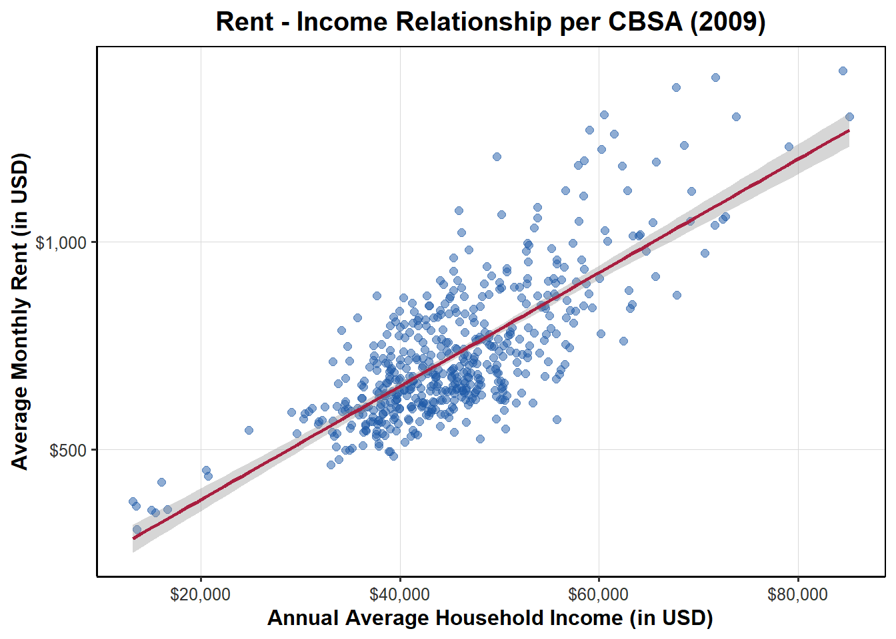
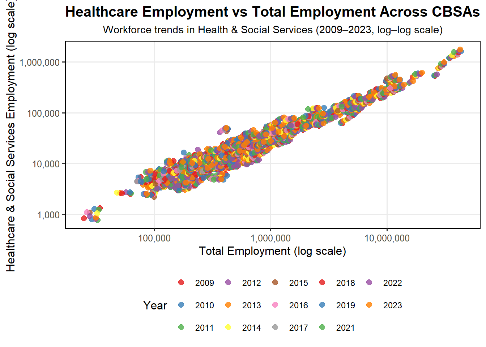
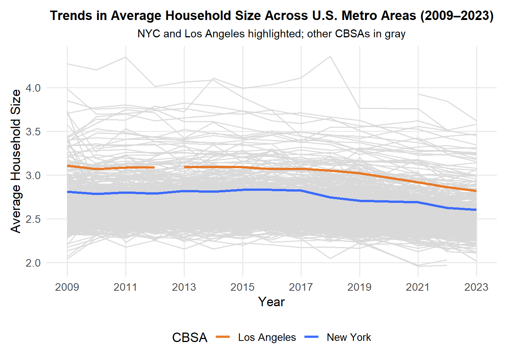
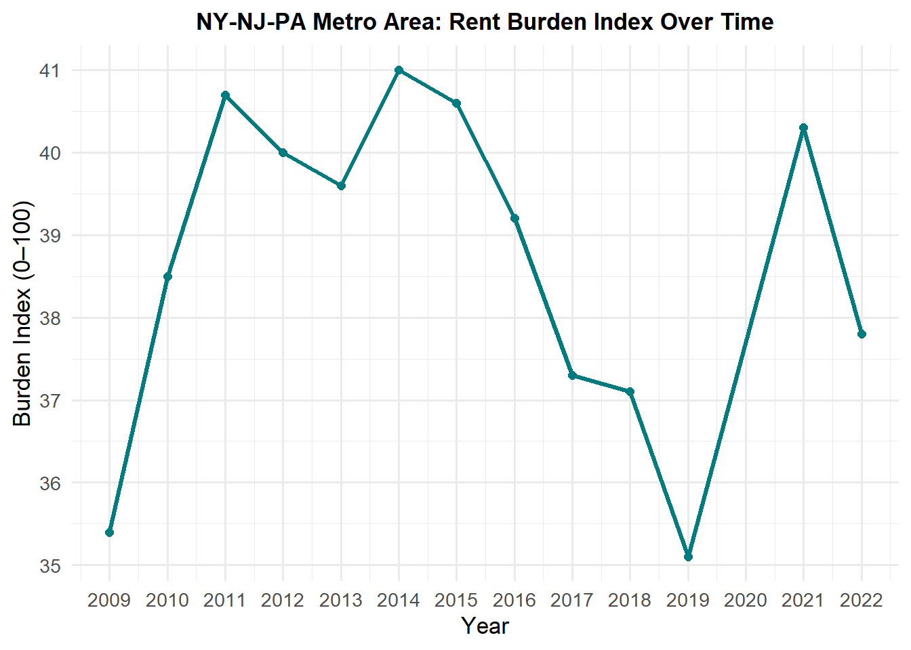
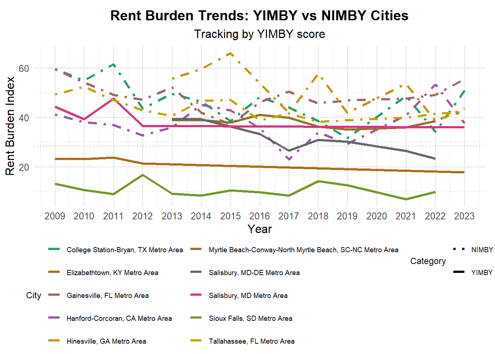

Housing affordability is a growing challenge in U.S. cities as rents rise faster than incomes and new construction lags. This project uses public statistical data to test whether metropolitan areas that add more housing units (via permitting and construction) see measurable affordability gains. I focus on metropolitan-level trends and policy-relevant comparisons to show how economic dynamics shape each city’s evolving housing landscape, culminating in a YIMBY-style policy brief.
Data Acquisition
Several public data sources were combined for this analysis. The American Community Survey(ACS) from the U.S. Census Bureau was accessed via the tidycensus package to obtain annual estimates of household income, rent, population, and household counts. The Building Permits Survey(BPS) from the U.S. Census Bureau’s Building Permits Program provided information on newly authorized housing units, enabling assessment of construction activity and housing supply growth. The Bureau of Labor Statistics(BLS) Quarterly Census of Employment and Wages supplied regional industry employment data to capture local economic conditions. All datasets were downloaded between 2009 and 2023 (excluding pandemic year 2020), cleaned, and prepared for further analysis.
Dataset#1: The below code sets up the project environment, ensures required packages are installed, creates a data directory, and downloads ACS data on income, rent, population, and households for all years between 2009–2023, excluding the 2020 COVID year.
View R Code
if(!dir.exists(file.path("data", "mp02"))){dir.create(file.path("data", "mp02"), showWarnings=FALSE, recursive=TRUE)}library <-function(pkg){## Mask base::library() to automatically install packages if needed## Masking is important here so downlit picks up packages and links## to documentation pkg <-as.character(substitute(pkg))options(repos =c(CRAN ="https://cloud.r-project.org"))if(!require(pkg, character.only=TRUE, quietly=TRUE)) install.packages(pkg)stopifnot(require(pkg, character.only=TRUE, quietly=TRUE))}library(tidyverse)library(glue)library(readxl)library(tidycensus)get_acs_all_years <-function(variable, geography="cbsa",start_year=2009, end_year=2023){ fname <-glue("{variable}_{geography}_{start_year}_{end_year}.csv") fname <-file.path("data", "mp02", fname)if(!file.exists(fname)){ YEARS <-seq(start_year, end_year) YEARS <- YEARS[YEARS !=2020] # Drop 2020 - No survey (covid) ALL_DATA <-map(YEARS, function(yy){ tidycensus::get_acs(geography, variable, year=yy, survey="acs1") |>mutate(year=yy) |>select(-moe, -variable) |>rename(!!variable := estimate) }) |>bind_rows()write_csv(ALL_DATA, fname) }read_csv(fname, show_col_types=FALSE)}# Household income (12 month)INCOME <-get_acs_all_years("B19013_001") |>rename(household_income = B19013_001)# Monthly rentRENT <-get_acs_all_years("B25064_001") |>rename(monthly_rent = B25064_001)# Total populationPOPULATION <-get_acs_all_years("B01003_001") |>rename(population = B01003_001)# Total number of householdsHOUSEHOLDS <-get_acs_all_years("B11001_001") |>rename(households = B11001_001)
Dataset#2: This code downloads and compiles Census Building Permits data (2009–2023) into a consistent dataset of new housing units by CBSA.
Dataset#3.1: The below code bit scrapes and compiles BLS NAICS industry codes into a structured dataset, capturing all four hierarchical levels for use in regional labor-market analysis.
View R Code
library(httr2)library(rvest)get_bls_industry_codes <-function(){ fname <-file.path("data", "mp02", "bls_industry_codes.csv")library(dplyr)library(tidyr)library(readr)if(!file.exists(fname)){ resp <-request("https://www.bls.gov") |>req_url_path("cew", "classifications", "industry", "industry-titles.htm") |>req_headers(`User-Agent`="Mozilla/5.0 (Macintosh; Intel Mac OS X 10.15; rv:143.0) Gecko/20100101 Firefox/143.0") |>req_error(is_error = \(resp) FALSE) |>req_perform()resp_check_status(resp) naics_table <-resp_body_html(resp) |>html_element("#naics_titles") |>html_table() |>mutate(title =str_trim(str_remove(str_remove(`Industry Title`, Code), "NAICS"))) |>select(-`Industry Title`) |>mutate(depth =if_else(nchar(Code) <=5, nchar(Code) -1, NA)) |>filter(!is.na(depth))# These were looked up manually on bls.gov after finding # they were presented as ranges. Since there are only three# it was easier to manually handle than to special-case everything else naics_missing <- tibble::tribble(~Code, ~title, ~depth, "31", "Manufacturing", 1,"32", "Manufacturing", 1,"33", "Manufacturing", 1,"44", "Retail", 1, "45", "Retail", 1,"48", "Transportation and Warehousing", 1, "49", "Transportation and Warehousing", 1 ) naics_table <-bind_rows(naics_table, naics_missing) naics_table <- naics_table |>filter(depth ==4) |>rename(level4_title=title) |>mutate(level1_code =str_sub(Code, end=2), level2_code =str_sub(Code, end=3), level3_code =str_sub(Code, end=4)) |>left_join(naics_table, join_by(level1_code == Code)) |>rename(level1_title=title) |>left_join(naics_table, join_by(level2_code == Code)) |>rename(level2_title=title) |>left_join(naics_table, join_by(level3_code == Code)) |>rename(level3_title=title) |>select(-starts_with("depth")) |>rename(level4_code = Code) |>select(level1_title, level2_title, level3_title, level4_title, level1_code, level2_code, level3_code, level4_code) |>drop_na() |>mutate(across(contains("code"), as.integer))write_csv(naics_table, fname) }read_csv(fname, show_col_types=FALSE)}INDUSTRY_CODES <-get_bls_industry_codes()
Dataset#3.2: Finally, the below code downloads and processes BLS QCEW annual averages (2009–2023, excluding 2020) to create a dataset of employment levels, total wages, and average wages by industry and region into a zip folder.
View R Code
library(httr2)library(rvest)get_bls_qcew_annual_averages <-function(start_year=2009, end_year=2023){ fname <-glue("bls_qcew_{start_year}_{end_year}.csv.gz") fname <-file.path("data", "mp02", fname) YEARS <-seq(start_year, end_year) YEARS <- YEARS[YEARS !=2020] # Drop Covid year to match ACSif(!file.exists(fname)){ ALL_DATA <-map(YEARS, .progress=TRUE, possibly(function(yy){ fname_inner <-file.path("data", "mp02", glue("{yy}_qcew_annual_singlefile.zip"))if(!file.exists(fname_inner)){request("https://www.bls.gov") |>req_url_path("cew", "data", "files", yy, "csv",glue("{yy}_annual_singlefile.zip")) |>req_headers(`User-Agent`="Mozilla/5.0 (Macintosh; Intel Mac OS X 10.15; rv:143.0) Gecko/20100101 Firefox/143.0") |>req_retry(max_tries=5) |>req_perform(fname_inner) }if(file.info(fname_inner)$size <755e5){warning(sQuote(fname_inner), "appears corrupted. Please delete and retry this step.") }read_csv(fname_inner, show_col_types=FALSE) |>mutate(YEAR = yy) |>select(area_fips, industry_code, annual_avg_emplvl, total_annual_wages, YEAR) |>filter(nchar(industry_code) <=5, str_starts(area_fips, "C")) |>filter(str_detect(industry_code, "-", negate=TRUE)) |>mutate(FIPS = area_fips, INDUSTRY =as.integer(industry_code), EMPLOYMENT =as.integer(annual_avg_emplvl), TOTAL_WAGES = total_annual_wages) |>select(-area_fips, -industry_code, -annual_avg_emplvl, -total_annual_wages) |># 10 is a special value: "all industries" , so omitfilter(INDUSTRY !=10) |>mutate(AVG_WAGE = TOTAL_WAGES / EMPLOYMENT) })) |>bind_rows()write_csv(ALL_DATA, fname) } ALL_DATA <-read_csv(fname, show_col_types=FALSE) ALL_DATA_YEARS <-unique(ALL_DATA$YEAR) YEARS_DIFF <-setdiff(YEARS, ALL_DATA_YEARS)if(length(YEARS_DIFF) >0){stop("Download failed for the following years: ", YEARS_DIFF, ". Please delete intermediate files and try again.") } ALL_DATA}WAGES <-get_bls_qcew_annual_averages()
Data Integration and Initial Exploration
With all datasets downloaded and cleaned, this section performs an initial exploration to understand their structure and contents.
Note
Extra-credit#1
Entity-Relationship Diagram:
Let us know examine the structure of our data sets. The following Entity-Relationship (ER) diagram illustrates how the datasets on income, rent, population, housing permits, and industry codes are connected, providing a clear view of the relationships used in the analysis. Note: The image has been created using https://dbdiagram.io tool. 
Guiding Questions for Analysis:
Next, we explore a few key questions to help guide and inform our analysis. ❓ Which CBSA (by name) permitted the largest number of new housing units in the decade from 2010 to 2019 (inclusive)?
View R Code
library(dplyr)library(DT)largest_housing_units <- PERMITS |>filter(year >=2010, year <=2019) |>group_by(CBSA) |>summarize(`CBSA_Highest_Permits`=sum(new_housing_units_permitted)) |>left_join(INCOME |>distinct(GEOID, NAME), join_by(CBSA == GEOID)) |>arrange(desc(`CBSA_Highest_Permits`)) |>slice_head(n=5)datatable(largest_housing_units, options =list(searching =FALSE, info =FALSE)) |>formatRound(c('CBSA_Highest_Permits'), digits =0) |>formatStyle(0, # 0 means the entire rowtarget ='row',backgroundColor =styleEqual(1, 'lightblue') # first row gets light blue )
✅ From 2010-2019, Houston-Sugar Land-Baytown, TX Metro Area led the nation, permitting 482,075 new housing units, driving a decade of rapid residential growth.
❓ In what year did Albuquerque, NM (CBSA Number 10740) permit the most new housing units?
View R Code
ALB_most_new_housing_permitted <- PERMITS |>filter(CBSA ==10740) |>group_by(year) |>summarize(`New_Housing_Units_Permitted`=sum(new_housing_units_permitted)) |>rename(`Year`= year) |>arrange(desc(`New_Housing_Units_Permitted`)) |>slice_head(n=5)datatable(ALB_most_new_housing_permitted, options =list(searching =FALSE, info =FALSE)) |>formatRound(c('New_Housing_Units_Permitted'), digits =0) |>formatStyle(0, # 0 means the entire rowtarget ='row',backgroundColor =styleEqual(1, 'lightblue') # first row gets light blue )
✅ Albuquerque, NM saw its highest number of new housing units in 2021, permitting 4,021 new housing units that year.
❓ Which state (not CBSA) had the highest average individual income in 2015?
View R Code
consolidated_data <- HOUSEHOLDS |>inner_join(INCOME, by =c("GEOID", "NAME", "year")) |>inner_join(POPULATION, by =c("GEOID", "NAME", "year")) |>mutate(std_cbsa =paste0("C", GEOID))library(stringr)format_titles <-function(df){colnames(df) <-str_replace_all(colnames(df), "_", " ") |>str_to_title() # converting column names to Title Case df}avg_ind_income_byState_2015 <- consolidated_data |>filter(year ==2015) |>mutate(total_income = household_income * households) |>mutate(state =str_extract(NAME, ", (.{2})", group=1)) |>group_by(state) |>summarize(total_income =sum(total_income, na.rm=TRUE), total_population =sum(population, na.rm=TRUE)) |>mutate(avg_ind_income = total_income / total_population) |>arrange(desc(avg_ind_income)) |>slice_head(n=5) |>rename(Average_individual_income = avg_ind_income) |>format_titles() |>datatable(options=list(searching=FALSE, info=FALSE)) |>formatRound(c('Total Income', 'Total Population', 'Average Individual Income'),0) |>formatStyle(0, # 0 means the entire rowtarget ='row',backgroundColor =styleEqual(1, 'lightblue') # first row gets light blue )avg_ind_income_byState_2015
✅ In 2015, DC topped the nation, with an average individual income of 33,233 dollars.
❓ Data scientists and business analysts are recorded under NAICS code 5182. What is the last year in which the NYC CBSA had the most data scientists in the country?
View R Code
# Given: Data scientists and business analysts are recorded under NAICS code 5182data_scientists <- WAGES |>filter(INDUSTRY ==5182) |>mutate(std_cbsa =paste0(FIPS, "0")) |>select(std_cbsa, YEAR, EMPLOYMENT)# CBSA with the most data scientists/ business analysts each yearcbsa_most_DA <- data_scientists |>group_by(YEAR) |>slice_max(EMPLOYMENT, n =1, with_ties =FALSE) |># using with_ties: if there are multiple rows with the same maximum value, only one row is returned when with_ties = TRUE, here it is FALSE, hence returns all rows even if they have same values.ungroup() |>left_join(POPULATION |>mutate(std_cbsa =paste0("C", GEOID)) |>select(std_cbsa, NAME) |>distinct(),by ="std_cbsa" )cbsa_most_DA |>select(Year = YEAR, `Metropolitan Region`= NAME,CBSA = std_cbsa,Employment = EMPLOYMENT) |>mutate(Employment = scales::comma(Employment)) |>slice_head(n=5) |>format_titles() |>datatable(options=list(searching=FALSE, info=FALSE)) |>formatStyle(0, # 0 means the entire rowtarget ='row',backgroundColor =styleEqual(1, 'lightblue') # first row gets light blue )
✅ The NYC CBSA last led the nation in data scientists/ business analysts in 2009, with a total employment of 16,349.
❓ What fraction of total wages in the NYC CBSA was earned by people employed in the finance and insurance industries (NAICS code 52)? In what year did this fraction peak?
View R Code
# Given info: The NAICS code for Finance and insurance industry is 52nyc_cbsa_finance <- WAGES |>filter(FIPS =="C3562") |>mutate(is_finance = INDUSTRY ==52) |>group_by(YEAR) |>summarize(fin_wages =sum(TOTAL_WAGES[is_finance], na.rm =TRUE),total_wages =sum(TOTAL_WAGES, na.rm =TRUE),fin_fraction = fin_wages / total_wages )# Find peak yearpeak_year <- nyc_cbsa_finance |>slice_max(fin_fraction, n =1)# Converting currency values to rounded off numbers in Billionsnyc_cbsa_finance |>mutate(fin_wages_bn = scales::dollar(fin_wages, scale =1e-9, suffix ="B", accuracy =0.1),total_wages_bn = scales::dollar(total_wages, scale =1e-9, suffix ="B", accuracy =0.1),fraction_percent = scales::percent(fin_fraction, accuracy =0.1) ) |>slice_max(fraction_percent, n =5) |>select(YEAR, fin_wages_bn, total_wages_bn, fraction_percent) |>format_titles() |>datatable(options=list(searching=FALSE, info=FALSE)) |>formatStyle(0, # 0 means the entire rowtarget ='row',backgroundColor =styleEqual(1, 'lightblue') # first row gets light blue )
✅ In the NYC CBSA, employees in the finance and insurance industries (NAICS 52) earned a peak fraction of 4.6% of total wages in 2014.
Initial Visualizations
This section presents a set of *ggplot2** visualizations designed to illustrate key economic and demographic relationships across U.S. CBSAs, highlighting how factors such as income, rent, employment, and household size vary and evolve over time.
Monthly Rent vs. Income (2009)
This plot illustrates how average monthly rent varies with household income across U.S. CBSAs in 2009. The code below filters rent and income data for 2009, merges them by GEOID & year, and removes missing values. A scatterplot is then created using ggplot2, where each point represents a CBSA, with a fitted regression line highlighting the positive relationship between household income and rent levels.
View R Code
library(ggplot2)library(dplyr)library(scales)# Filter RENT and INCOME TABLES for 2009 and then join themrent_income_2009 <- RENT |>filter(year ==2009) |>inner_join(INCOME |>filter(year ==2009), by =c("GEOID", "NAME", "year"))# Create scatter plot (X axis - income, Y axis - monthly rent)ggplot(rent_income_2009, aes(x = household_income, y = monthly_rent)) +geom_point(alpha =0.5, color ="#1E5AA8", size =2) +geom_smooth(method ="lm", color ="#A81E3F", se =TRUE, linewidth =1) +scale_x_continuous(labels = scales::dollar_format()) +scale_y_continuous(labels = scales::dollar_format()) +labs(title ="Rent - Income Relationship per CBSA (2009)",x ="Annual Average Household Income (in USD)",y ="Average Monthly Rent (in USD)" ) +theme_classic(base_size =12) +theme(plot.title =element_text(hjust =0.5, face ="bold", size =15),plot.subtitle =element_text(size =11, face ="italic", color ="gray30"),panel.border =element_rect(color ="black", fill =NA, linewidth =0.7),panel.grid.major =element_line(color ="gray85", linewidth =0.3),panel.grid.minor =element_blank(),axis.title =element_text(face ="bold"),axis.text =element_text(color ="gray20") )

Health Care Employment Growth Across CBSAs
This plot shows how healthcare employment scales with total employment across U.S. metros from 2009–2023. Log–log axes clarify patterns across vastly different city sizes and reduce skewness. Data was filtered by NAICS 62, aggregated by CBSA and year, and plotted with distinct year colors to highlight workforce trends over time.
View R Code
# Load required librarieslibrary(ggplot2)library(scales)library(dplyr)# Healthcare is NAICS code 62healthcare_employment <- WAGES |>mutate(is_healthcare = INDUSTRY ==62,std_cbsa =paste0(FIPS, "0")) |>group_by(std_cbsa, YEAR) |>summarize(healthcare_employment =sum(EMPLOYMENT[is_healthcare], na.rm =TRUE),total_employment =sum(EMPLOYMENT, na.rm =TRUE),.groups ="drop" ) |>filter(total_employment >0, healthcare_employment >0)# Scatter plot with unique themelibrary(RColorBrewer)# Create a color vector for 15 yearsyear_colors <-brewer.pal(n =9, name ="Set1") %>%rep(length.out =15) # repeat to get 15 colorsggplot(healthcare_employment, aes(x = total_employment, y = healthcare_employment, color =factor(YEAR))) +geom_point(alpha =0.8, size =2.5) +scale_color_manual(values = year_colors) +scale_x_log10(labels = scales::comma_format()) +scale_y_log10(labels = scales::comma_format()) +labs(title ="Healthcare Employment vs Total Employment Across CBSAs",subtitle ="Workforce trends in Health & Social Services (2009–2023, log–log scale)",x ="Total Employment (log scale)",y ="Healthcare & Social Services Employment (log scale)",color ="Year" ) +theme_bw(base_size =12) +theme(plot.title =element_text(face ="bold", size =15, hjust =0.5),plot.subtitle =element_text(size =11, hjust =0.5),legend.position ="bottom",legend.text =element_text(size =9),panel.grid.minor =element_blank(),panel.border =element_rect(color ="black", fill =NA) )

The chart shows a strong positive relationship between total employment and healthcare employment across CBSAs, indicating healthcare grows proportionally with metro size. Larger regions consistently employ more healthcare workers, and over time points shift upward, suggesting steady sector expansion. Post-2020 data appears slightly higher, reflecting accelerated growth in healthcare demand after the pandemic.
Evolution of Average Household Size
This chart illustrates the evolution of average household size across U.S. metropolitan areas from 2009 to 2023, highlighting New York City and Los Angeles while placing other CBSAs in context.
Note
Extra-credit#2
View R Code
library(ggplot2)library(dplyr)library(gghighlight)library(stringr)# Calculate average household size by CBSA and yearcbsa_hh <- POPULATION |>select(GEOID, NAME, year, population) |>inner_join( HOUSEHOLDS |>select(GEOID, year, households),by =c("GEOID", "year") ) |>mutate(avg_hh_size = population / households)# Define colors for major CBSAs and otherscbsa_colors <-c("New York"="#2A5FFF","Los Angeles"="#E86E14","Other CBSA"="grey75")# Plot the trendsggplot(cbsa_hh, aes(x = year, y = avg_hh_size,group = GEOID,color =case_when(str_detect(NAME, "New York") ~"New York",str_detect(NAME, "Los Angeles") ~"Los Angeles",TRUE~"Other CBSA" ))) +geom_line(linewidth =1.2, alpha =0.9) +gghighlight(str_detect(NAME, "New York|Los Angeles"),use_direct_label =FALSE,unhighlighted_params =list(color ="grey85", linewidth =0.7) ) +scale_color_manual(values = cbsa_colors) +scale_x_continuous(breaks =seq(2009, 2023, by =2)) +# X-axis every 2 yearslabs(title ="Trends in Average Household Size Across U.S. Metro Areas (2009–2023)",subtitle ="NYC and Los Angeles highlighted; other CBSAs in gray",x ="Year",y ="Average Household Size",color ="CBSA" ) +theme_minimal(base_size =13) +theme(plot.title =element_text(face ="bold", size =13, hjust =0.5),plot.subtitle =element_text(size =11, hjust =0.5),legend.position ="bottom",panel.grid.minor =element_blank(),plot.margin =margin(t =10, r =10, b =10, l =10) )

The code calculates average household size by dividing population by households for each metro area, highlights New York City and Los Angeles in distinct colors while graying out other CBSAs, and the chart shows that NYC and LA consistently have smaller household sizes compared with most other U.S. metropolitan areas over 2009–2023.
Rent Burden
Rent burden captures the proportion of household income devoted to rent, serving as a key measure of housing affordability. By merging the INCOME and RENT tables on geography and year, we calculate:
To enable meaningful comparisons across metro areas and over time, this metric is standardized on a 0–100 scale, where 0 represents the lowest observed burden and 100 the highest within the study period.
Tracking Rent Burden Across U.S. Metro Areas
View R Code
# Merge income and rent data to compute annual rent and rent burdenrent_burden <- INCOME |>inner_join(RENT, by =c("GEOID", "year")) |>select(-NAME.y) |>rename(City = NAME.x) |>mutate(annual_rent = monthly_rent *12, # compute annual rentrent_to_income = annual_rent / household_income, # ratio of rent to incomerent_burden_pct = rent_to_income *100# convert to percentage )# Identify min and max rent burden for standardizationmin_burden <-min(rent_burden$rent_burden_pct, na.rm =TRUE)max_burden <-max(rent_burden$rent_burden_pct, na.rm =TRUE)# Standardize rent burden to a 0–100 scale for comparabilityrent_burden <- rent_burden |>mutate(burden_index =100* (rent_burden_pct - min_burden) / (max_burden - min_burden) )
This code summarizes yearly rent burden metrics and displays them in an interactive datatable, with numeric formatting and conditional highlighting of the lowest (green) and highest (red) burden years.
View R Code
# Prepare summary table and display as datatable with formatting and highlightsrent_burden_summary <- rent_burden |>group_by(year) |>summarise(avg_household_income =mean(household_income, na.rm =TRUE),avg_annual_rent =mean(annual_rent, na.rm =TRUE),avg_rent_burden_pct =mean(rent_burden_pct, na.rm =TRUE),avg_burden_index =mean(burden_index, na.rm =TRUE) ) |>arrange(year)# Identify min and max burden index for conditional formattingmax_index <-max(rent_burden_summary$avg_burden_index, na.rm =TRUE)min_index <-min(rent_burden_summary$avg_burden_index, na.rm =TRUE)# Display interactive datatablerent_burden_summary |>datatable(rownames =FALSE,colnames =c("Year","Average Household Income (USD)","Average Annual Rent (USD)","Average Rent Burden (%)","Average Burden Index (0-100)" ),options =list(searching =FALSE,info =FALSE,pageLength =-1# show all rows ) ) |>formatRound(columns =c('avg_household_income', 'avg_annual_rent', 'avg_rent_burden_pct', 'avg_burden_index'), digits =c(0,0,2,2) ) |>formatStyle('avg_burden_index',target ='row',backgroundColor =styleInterval(c(min_index +0.01, max_index -0.01),c('#90EE90', NA, '#FF6347') ) )
The table presents key indicators of housing affordability—average household income, annual rent, rent burden (percentage of income spent on rent), and the Burden Index—for U.S. metro areas over time. Rent burden peaked in 2014, marked in red, with a Burden Index of 30.34, signaling that households devoted a particularly large share of income to rent that year. In contrast, 2019, highlighted in green, recorded the lowest Burden Index of 25.64, reflecting a brief improvement in affordability despite the ongoing trend of rising incomes and rents. The overall data illustrate that, while both incomes and rents have steadily increased, housing affordability has fluctuated rather than followed a consistent trend.
Tracking the Evolution of Rent Burden in NYC
This section traces how rent burden in the New York metro area has shifted over time, offering a lens into the rising cost pressures faced by households across the region. The code filters the dataset for the NY-NJ-PA Metro Area, calculates annual rent burden metrics, formats the results for clarity, and visualizes the burden index trend over time for clearer year-to-year comparison.
View R Code
nyc_rent_summary <- rent_burden |>filter(str_detect(City, "NY-NJ-PA Metro Area")) |>group_by(year) |>select(Year = year,`Monthly Rent (USD)`= monthly_rent,`Household Income (USD)`= household_income,`Rent Burden %`= rent_burden_pct,`Burden Index`= burden_index ) |>mutate(`Monthly Rent (USD)`=dollar(round(`Monthly Rent (USD)`, 0)),`Household Income (USD)`=dollar(round(`Household Income (USD)`, 0)),`Rent Burden %`=round(`Rent Burden %`, 1),`Burden Index`=round(`Burden Index`, 1) )datatable( nyc_rent_summary,caption ="NY-NJ-PA Metro Area Rent Burden Over Time (2009–2023)",options =list(pageLength =10, searching =FALSE))
View R Code
# Prepare data for plotnyc_burden_plot <- nyc_rent_summary |>select(Year, `Burden Index`) |>mutate(`Burden Index`=as.numeric(`Burden Index`))ggplot(nyc_burden_plot, aes(x = Year, y =`Burden Index`)) +geom_line(linewidth =1.2, color ="#007B7F") +geom_point(size =2, color ="#007B7F") +scale_x_continuous(breaks =seq(2009, 2023, by =1)) +labs(title ="NY-NJ-PA Metro Area: Rent Burden Index Over Time",x ="Year",y ="Burden Index (0–100)" ) +theme_minimal(base_size =13) +theme(plot.title =element_text(face ="bold", size =13, hjust =0.5) )

The above line chart shows a steady upward trajectory in NYC’s rent burden index, highlighting consistent affordability pressures with notable spikes in recent years; reflecting how housing costs have increasingly outpaced household incomes.
Rent Burden Leaders and Laggards Across U.S. Metro Regions
Here, we spotlight the metro areas with the most and least severe rent burden to understand where renting is most financially challenging and where it remains more affordable.
This code bit first identifies the latest year in the dataset and ranks all metro areas by their Burden Index for that year. It then extracts the top 5 most and top 5 least rent-burdened metros, selecting key columns for analysis and display.
View R Code
# Get the most recent year in the datasetlatest_year <-max(rent_burden$year, na.rm =TRUE)# Filter for the latest year and rank by Burden Indexrent_burden_extremes <- rent_burden |>filter(year == latest_year) |>arrange(desc(burden_index)) |>mutate(rank =row_number())# Top 5 most rent-burdened metro areasmost_burdened <- rent_burden_extremes |>select(City, household_income, annual_rent, rent_burden_pct, burden_index) |>slice_head(n =5)# Top 5 least rent-burdened metro areasleast_burdened <- rent_burden_extremes |>select(City, household_income, annual_rent, rent_burden_pct, burden_index) |>slice_tail(n =5)
This code renders the top 5 most rent-burdened metro areas in an interactive datatable; similarly, the least rent-burdened table displays the least rent-burdened metros, sorted from lowest to highest Burden Index, with the lowest burden metro highlighted for emphasis.
View R Code
# Display top 5most_burdened_DT <- most_burdened |>format_titles() |>datatable(options =list(searching =FALSE, info =FALSE)) |>formatRound(columns =c('Household Income', 'Annual Rent', 'Rent Burden Pct', 'Burden Index'),digits =c(0, 0, 1, 1)) |>formatStyle(0, # 0 means the entire rowtarget ='row', backgroundColor =styleEqual(1, 'lightblue') # first row gets light blue )most_burdened_DT
The above table highlights metros where residents spend the largest share of income on rent, with Burden Index values ranging from about 66 to 73, reflecting the highest housing affordability pressures.
View R Code
# Display top 5least_burdened_DT <- least_burdened |>arrange(burden_index) |>format_titles() |>datatable(options =list(searching =FALSE, info =FALSE)) |>formatRound(columns =c('Household Income', 'Annual Rent', 'Rent Burden Pct', 'Burden Index'),digits =c(0, 0, 1, 1)) |>formatStyle(0, # 0 means the entire rowtarget ='row', backgroundColor =styleEqual(1, 'lightblue') # first row gets light blue )least_burdened_DT
The above interactive table shows metros with the lowest rent burden, where residents spend a small portion of income on housing, with Burden Index values near 1–6, indicating relatively affordable housing markets.
Housing Growth
With a consistent measure of rent burden now in place, we can begin identifying the most pro-housing or “YIMBY” metros. Our goal is to understand whether regions with lighter rent burdens are also the ones issuing more housing permits. More specifically, if a city is adding new housing at a pace that exceeds its population growth, it likely indicates a market where supply is keeping up, making it a more affordable place to live.
To evaluate this relationship, we introduce two complementary measures of housing growth: - an instantaneous indicator that captures activity in a specific year - a rate-based metric that evaluates trends over a rolling five-year window
This code block calculates a composite housing growth index for each CBSA by combining short-term (instantaneous) and long-term (five-year rate-based) measures of housing expansion relative to population. Rolling averages smooth population trends, and both metrics are standardized and averaged to create an overall index for comparing housing growth across metros.
View R Code
if (!requireNamespace("RcppRoll", quietly =TRUE)) {install.packages("RcppRoll")}library(RcppRoll)# we use above package for the function rollmean() which is used to compute a rolling (moving) average over a sequence of values. Instead of looking at each value independently, it smooths the data by averaging a window of recent observations.housing_growth <- PERMITS |>inner_join(POPULATION, by =c("CBSA"="GEOID", "year"="year")) |>arrange(CBSA, year) |>group_by(CBSA) |>mutate(pop_growth_5yr = population -lag(population, 5),pop_roll_mean =roll_mean(population, n =5, align ="right", fill =NA),instantaneous_growth =1000* new_housing_units_permitted / population,rate_based_growth = new_housing_units_permitted / pop_growth_5yr,rate_based_growth =ifelse(is.infinite(rate_based_growth) |is.nan(rate_based_growth), NA, rate_based_growth) ) |>ungroup() |>#scale() function used below standardizes a variable between a scale of 0 and 100mutate(instantaneous_index = scales::rescale(instantaneous_growth, to =c(0, 100), na.rm =TRUE),rate_based_index = scales::rescale(rate_based_growth, to =c(0, 100), na.rm =TRUE),overall_index = (instantaneous_index + rate_based_index) /2 )
Instantaneous Growth Metric
The next two code blocks identify and display the top and bottom 10 CBSAs based on the instantaneous_index for the latest year. The first block extracts the metros with the highest short-term housing growth relative to population, while the second block highlights those with the lowest growth. Both sets are formatted as interactive tables, with the top three rows visually emphasized for easy reference.
View R Code
# Identify top CBSAs based on instantaneous_index (for latest year - 2023)instantaneous_top <- housing_growth |>filter(year == latest_year) |>arrange(desc(instantaneous_index)) |>select(CBSA, NAME, population, instantaneous_growth, instantaneous_index) |>slice_head(n=10) |>format_titles()DT::datatable( instantaneous_top,caption =paste("Top 10 CBSAs based on Instantaneous index (", latest_year, ")", sep=""),colnames =c("CBSA", # replaces "Cbsa""Name","Population","Permitted Units Per 1000", # replaces "Instantaneous Growth""Instantaneous Index (0-100)"# replaces "Instantaneous Index" ),options =list(searching =FALSE, info =FALSE, pageLength =10, scrollX =TRUE)) |>formatRound(columns =c('Population', 'Instantaneous Growth', 'Instantaneous Index'),digits =c(0, 2, 2) ) |>formatStyle(0,target ='row',backgroundColor =styleEqual(1:3, rep('lightblue',3)) )
View R Code
# Identify bottom CBSAs based on instantaneous_index (for latest year - 2023)instantaneous_bottom <- housing_growth |>filter(year == latest_year) |>arrange((instantaneous_index)) |>select(CBSA, NAME, population, instantaneous_growth, instantaneous_index) |>slice_head(n=10) |>format_titles()DT::datatable( instantaneous_bottom,caption =paste("Bottom 10 CBSAs based on Instantaneous index (", latest_year, ")", sep=""),colnames =c("CBSA", # replaces "Cbsa""Name","Population","Permitted Units Per 1000", # replaces "Instantaneous Growth""Instantaneous Index (0-100)"# replaces "Instantaneous Index" ),options =list(searching =FALSE, info =FALSE, pageLength =10, scrollX =TRUE)) |>formatRound(columns =c('Population', 'Instantaneous Growth', 'Instantaneous Index'),digits =c(0, 2, 2) ) |>formatStyle(0,target ='row',backgroundColor =styleEqual(1:3, rep('lightblue',3)) )
Key Observations from Instantaneous index:
Smaller metros with high per-capita permit activity (e.g., Salisbury, MD) and several Florida metros lead in short-term housing growth.
Bottom CBSAs, mostly small to mid-sized metros in the Midwest and Appalachia, have minimal permit activity relative to population.
Instantaneous index highlights per-capita permit intensity, so smaller, actively permitting metros often rank higher than larger metros.
Rate-Based Growth Metric
The below code blocks list the top and bottom 10 CBSAs based on the five-year rate_based_index. They highlight metros with the fastest and slowest long-term housing growth relative to population, with the top three rows visually emphasized in each table.
View R Code
# Identify top CBSAs based on rate_based_index (for latest year - 2023)rb_top <- housing_growth |>filter(year == latest_year) |>arrange(desc(rate_based_index)) |>select(CBSA, NAME, population, rate_based_growth, rate_based_index) |>slice_head(n=10) |>format_titles()DT::datatable( rb_top,caption =paste("Top 10 CBSAs based on Rate Based index (", latest_year, ")", sep=""),colnames =c("CBSA", # replaces "Cbsa""Name","Population","Permitted Units Per 1000","Rate Based Index (0-100)" ),options =list(searching =FALSE, info =FALSE, pageLength =10, scrollX =TRUE)) |>formatRound(columns =c('Population', 'Rate Based Growth', 'Rate Based Index'),digits =c(0, 2, 2) ) |>formatStyle(0,target ='row',backgroundColor =styleEqual(1:3, rep('lightblue',3)) )
View R Code
# Identify bottom CBSAs based on rate_based_index (for latest year - 2023)rb_bottom <- housing_growth |>filter(year == latest_year) |>arrange((rate_based_index)) |>select(CBSA, NAME, population, rate_based_growth, rate_based_index) |>slice_head(n=10) |>format_titles()DT::datatable( rb_bottom,caption =paste("Bottom 10 CBSAs based on Rate Based index (", latest_year, ")", sep=""),colnames =c("CBSA", # replaces "Cbsa""Name","Population","Permitted Units Per 1000","Rate Based Index (0-100)" ),options =list(searching =FALSE, info =FALSE, pageLength =10, scrollX =TRUE)) |>formatRound(columns =c('Population', 'Rate Based Growth', 'Rate Based Index'),digits =c(0, 2, 2) ) |>formatStyle(0,target ='row',backgroundColor =styleEqual(1:3, rep('lightblue',3)) )
Key Observations from Rate Based Index:
Top CBSAs show positive long-term housing growth relative to population, led by smaller metros (e.g., Springfield, OH) and some large metros like Honolulu and Miami, indicating strong supply responsiveness over five years.
Bottom CBSAs include both small and large metros (e.g., Sierra Vista, AZ; St. Louis, MO-IL) with slow or negative long-term growth, reflecting limited housing expansion relative to population increases.
Rate-Based Index highlights sustained, long-term housing supply performance, rather than one-year permit intensity, making it less sensitive to per-capita spikes in smaller metros.
Overall/ Combined Growth Metric
This metric integrates both short-term (instantaneous) and long-term (rate-based) housing growth measures into a single composite index, providing a comprehensive view of CBSA-level housing supply responsiveness.
View R Code
# Select top 5 and bottom 5 based on overall_index, excluding NAsoverall_combined <- housing_growth |>filter(year == latest_year, !is.na(overall_index)) |># remove rows with NAarrange(desc(overall_index)) |>slice(c(1:5, (n() -4):n())) |># top 5 and bottom 5select(CBSA, NAME, population, overall_index) |>mutate(rank_group =case_when(row_number() <=5~"Top 5",TRUE~"Bottom 5" ) )# Create datatableDT::datatable( overall_combined,caption =paste("Top & Bottom CBSAs based on Composite index (", latest_year, ")", sep=""),colnames =c("CBSA","Name","Population","Overall Index (0-100)","Rank Group" ),options =list(searching =FALSE, info =FALSE, pageLength =10, scrollX =TRUE)) |>formatRound(columns =c('population', 'overall_index'),digits =c(0, 2) ) |>formatStyle('rank_group',target ='row',backgroundColor =styleEqual(c("Top 5", "Bottom 5"), c("lightgreen", "lightcoral")) )
The Composite Index highlights CBSAs with the strongest and weakest housing growth in 2023. Top 5 metros (e.g., Salisbury, MD and several Florida areas) show robust growth with index values 35–62, while bottom 5 metros (e.g., Enid, OK; Appalachian and Midwest areas) have minimal growth around 12. This table contrasts supply-responsive metros with those experiencing limited housing expansion.
Identifying YIMBY Cities: Linking Rent Burden and Housing Growth
This section investigates the relationship between rent burden and housing growth across CBSAs to identify potential “YIMBY” cities. Using visualizations, we examine metros that started with relatively high rent burden, experienced declining rents over the study period, grew in population, and demonstrated above-average housing growth. CBSAs exhibiting all of these characteristics reflect effective housing supply responsiveness, suggesting that increased housing production can help alleviate affordability pressures without signaling population decline.
Spotting YIMBY Success: Top Candidate CBSAs
Here, we identify and rank U.S. metro areas where high initial rents declined over time alongside population growth and above-average housing expansion. These metros exemplify effective housing supply response, offering insights into successful YIMBY outcomes.
We rescale again to ensure all components align directionally (higher = better); specifically flipping the rent burden metric so low-burden markets receive higher YIMBY scores and remain consistent with the 0–100 scoring logic.
View R Code
# Identify metros with declining rent burden, population growth, and above-average housing growthyimby_success <- rent_burden |># Compute change in rent burden over time per CBSA/Citygroup_by(GEOID, City) |>summarise(rent_start =first(rent_burden_pct, order_by = year),rent_end =last(rent_burden_pct, order_by = year),rent_change = rent_end - rent_start, # negative = declinepop_start =first(POPULATION$population[POPULATION$GEOID == GEOID]),pop_end =last(POPULATION$population[POPULATION$GEOID == GEOID]),pop_change = pop_end - pop_start # positive = growth ) |>ungroup() |># Merge with housing growth (overall_index) for latest yearinner_join( housing_growth |>filter(year == latest_year) |>select(CBSA = CBSA, overall_index),by =c("GEOID"="CBSA") ) |># Keep CBSAs meeting all three criteriafilter( rent_change <0, # declining rent burden pop_change >0, # population growth overall_index >mean(overall_index, na.rm =TRUE) # above-average housing growth ) |># Compute scores if neededmutate(rent_score =100- scales::rescale(rent_end, to =c(0, 100), na.rm =TRUE),housing_growth_score = scales::rescale(overall_index, to =c(0, 100), na.rm =TRUE),yimby_score = (rent_score + housing_growth_score) /2 ) |>arrange(desc(yimby_score)) |>select(CBSA = GEOID, City, rent_score, housing_growth_score, yimby_score)# Rename certain columns for consistencytop_yimby <- yimby_success |>slice_head(n =10) |>select(`Metropolitan Area`= City,`Rent Score`= rent_score,`Housing Growth Score`= housing_growth_score,`YIMBY Score`= yimby_score )# Display datatableDT::datatable( top_yimby,caption =paste("Top 10 YIMBY Metros — Strong Growth & Lower Rent Burden (", latest_year, ")", sep =""),options =list(searching =FALSE, info =FALSE, pageLength =10, scrollX =TRUE)) |>formatRound(columns =c("Rent Score", "Housing Growth Score", "YIMBY Score"),digits =2 ) |>formatStyle(0,target ='row',backgroundColor =styleEqual(1:5, rep('lightblue', 5)) )
Notably, smaller metros like Salisbury, MD and Myrtle Beach, SC lead the ranking, showing effective housing supply responsiveness relative to population pressures.
Plot 1: Mapping Rent Burden Against Housing Growth
The code visualizes the relationship between rent burden and housing growth for cities in the YIMBY Success dataset. Each city’s average rent score and housing growth score are calculated, and the overall dataset averages are used as reference points. Based on these averages, cities are classified into four quadrants:
High Rent, High Growth (YIMBY Success): Cities where both rent burden and housing growth are above average.
High Rent, Low Growth (NIMBY): Cities with high rent burden but below-average housing growth.
Low Rent, High Growth: Cities with lower rent burden but higher housing growth.
Low Rent, Low Growth: Cities with both rent burden and growth below average.
The scatter plot shows these quadrants, with dashed lines indicating the overall mean values. Additionally, the top five cities with the highest YIMBY scores are highlighted and labeled to emphasize areas where pro-housing policies appear most effective.
Key Takeaways
Cities with high rent and high growth show successful pro-housing (YIMBY) outcomes, while high rent, low growth cities indicate restrictive (NIMBY) conditions.
Smaller cities with lower rents and slower growth face less pressure, and the top 5 YIMBY cities highlight where housing policies are most effective.
Plot 2: Rent Burden Over Time Across Key Cities
Now, we examine how rent burden has evolved over time in metropolitan areas identified as YIMBY leaders versus NIMBY challenges. By tracking the top and bottom cities based on YIMBY scores, we observe patterns in housing affordability and identify which areas are experiencing higher rent pressures relative to housing growth.
View R Code
library(RColorBrewer)library(grid) # for unit()## Identify top and bottom YIMBY citiestop_cities <- yimby_success |>arrange(desc(yimby_score)) |>slice_head(n =5) |>pull(City)bottom_cities <- yimby_success |>arrange(yimby_score) |>slice_head(n =5) |>pull(City)# Prepare time series data from rent_burdentime_series_data <- rent_burden |>filter(City %in%c(top_cities, bottom_cities)) |>mutate(city_type =ifelse(City %in% top_cities, "YIMBY", "NIMBY"))# Generate dynamic dark colors for citiesunique_cities <-unique(time_series_data$City)n_cities <-length(unique_cities)palette_colors <-colorRampPalette(brewer.pal(8, "Dark2"))(n_cities)color_mapping <-setNames(palette_colors, unique_cities)# Plot rent burden over time with new colorsggplot(time_series_data, aes(x = year, y = burden_index,color = City, linetype = city_type)) +geom_line(size =1.2) +geom_hline(yintercept =mean(rent_burden$burden_index, na.rm =TRUE),linetype ="dotted", color ="darkgray") +scale_x_continuous(breaks =2009:2023) +scale_color_manual(values = color_mapping) +scale_linetype_manual(values =c("YIMBY"="solid","NIMBY"="dotdash"),name ="Category") +labs(title ="Rent Burden Trends: YIMBY vs NIMBY Cities",subtitle ="Tracking by YIMBY score",x ="Year",y ="Rent Burden Index",color ="City" ) +theme_minimal(base_size =12) +theme(plot.title =element_text(face ="bold", hjust =0.5),plot.subtitle =element_text(hjust =0.5),legend.position ="bottom",legend.text =element_text(size =7),legend.title =element_text(size =9),legend.key.width =unit(0.5, "cm"),legend.spacing.y =unit(0.05, "cm"), # reduce spacing between legend itemslegend.box.spacing =unit(0.2, "cm"), # reduce space around legend boxlegend.margin =margin(t =0, r =0, b =0, l =0), # remove extra legend marginplot.margin =margin(t =10, r =10, b =5, l =5) # increase plot area slightly ) +guides(color =guide_legend(ncol =2),linetype =guide_legend(ncol =1) )

Sioux Falls, SD and Elizabethtown, KY have the best trends, showing low and stable rent burdens over time. Myrtle Beach, SC-NC and Hanford-Corcoran, CA show consistently high and volatile rent burdens, indicating greater challenges. Salisbury, MD-DE improves notably in recent years, while most other cities remain flat or mixed in their trends.
Encouraging Pro-Housing Policies Across U.S. Cities
Purpose:
This brief proposes a federal program to incentivize local municipalities to adopt more YIMBY-oriented housing policies, promoting affordable housing, reducing rent burdens, and supporting sustainable urban growth.
Proposed Congressional Sponsors:
Primary Sponsor: The representative from Houston–Sugar Land–Baytown, TX Metro Area represents a city with clear YIMBY success, characterized by moderate rents and robust housing development. The city has seen a high rate of approved housing permits relative to population growth (approximately 14.6% between 2009 and 2023). Meanwhile, the average rent burden index has increased only gradually, far outpaced by the growth in new housing permits
Co-Sponsor: The representative from New York–Northern New Jersey–Long Island, NY–NJ–PA Metro Area represents a city facing a typical NIMBY challenge, with high rents and limited housing growth. Renters here spend over 40% of their income on housing, and this burden has been steadily increasing each year. Population growth in the city is strong, but the pace of new housing permits has not kept up.
Key Supporters & Occupations:
Construction and Building Developers: This sector stands to gain an estimated 15% increase in yearly housing projects, creating more jobs for skilled workers.
Healthcare Workers: Professionals in essential services frequently cannot afford local housing. Lowering rent burdens can reduce commuting pressures and boost public-sector retention by up to 7.3%.
Young workers: This group forms a large part of every city’s workforce, this category would benefit from reduced rent burdens that make home ownership more attainable and stimulate the local economy.
Why these groups support the bill:
Reduced rent burden and increased housing availability improves standard of living
Boosts employment in construction and related sectors
Workers spend less on housing, leaving more disposable income for community spending, boosting local economies
Policy Key Metrics:
Rent-Burden Index (Rent to Income Ratio): Measures the share of household income spent on rent (0–100). A declining index indicates improved affordability and successful YIMBY outcomes.
Housing-Growth Index: Combines housing permits per capita with permits relative to 5-year population growth. A higher index indicates that housing supply is keeping pace with demand.
Summary Cities scoring high on both metrics demonstrate a resilient housing market and are strong candidates for federal rewards. Conversely, cities with low growth and high rent burdens should receive technical assistance and capacity-building support.
Policy Implication:
Federal YIMBY incentives should focus on metros with strong housing growth and falling rent burdens. A Houston–New York partnership illustrates bipartisan support, while grants, zoning flexibility, and infrastructure investment can replicate YIMBY success nationwide.